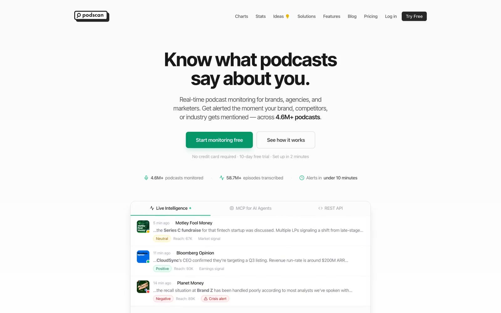

Podscan.fm 的 Design.md 主题展示，围绕浅色界面、媒体内容、AI、SaaS 产品组织页面。
Explore Podscan.fm's light Media design system: Absolute Zero #f4f4f5, Graphite #52525b colors, Inter Tight, ui-sans-serif typography, and DESIGN.md for AI...

#f4f4f5: #f4f4f5#52525b: #52525b#18181b: #18181b#ffffff: #ffffff#e5e7eb: #e5e7eb#10b981: #10b981#059669: #059669#a1a1aa: #a1a1aa#71717a: #71717a#a7f3d0: #a7f3d0#a5b4fc: #a5b4fc#e9d5ff: #e9d5ffdisplay: Inter Tightbody: ui-sans-serifmono: ui-monospacehints: Inter Tight,ui-sans-serif,ui-monospace